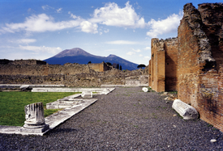
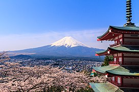

Monte Vesubio

El Monte Vesubio es uno de los volcanes más famosos del
mundo, conocido por la erupción que destruyó Pompeya.
Explora la fascinante geología de los volcanes más impresionantes del planeta.

El Monte Vesubio es uno de los volcanes más famosos del
mundo, conocido por la erupción que destruyó Pompeya.

El Monte Fuji es el volcán más alto de Japón y un símbolo icónico del país.